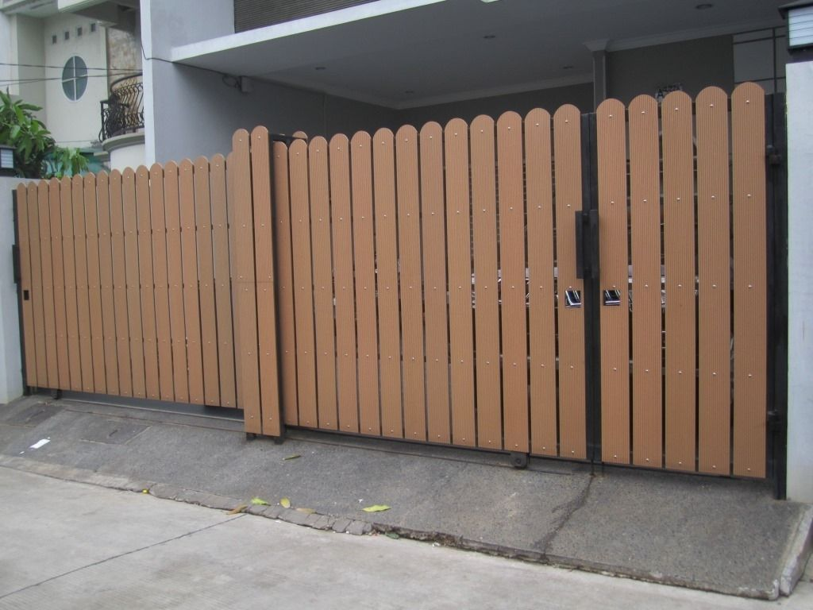
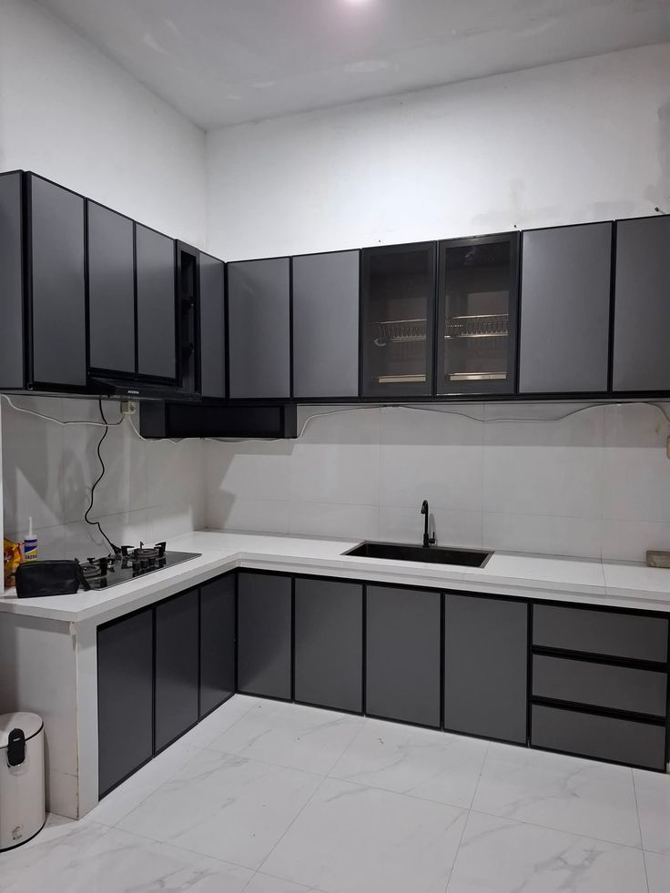
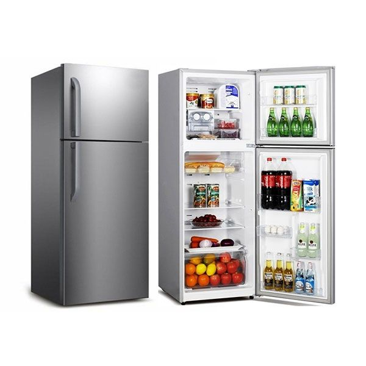
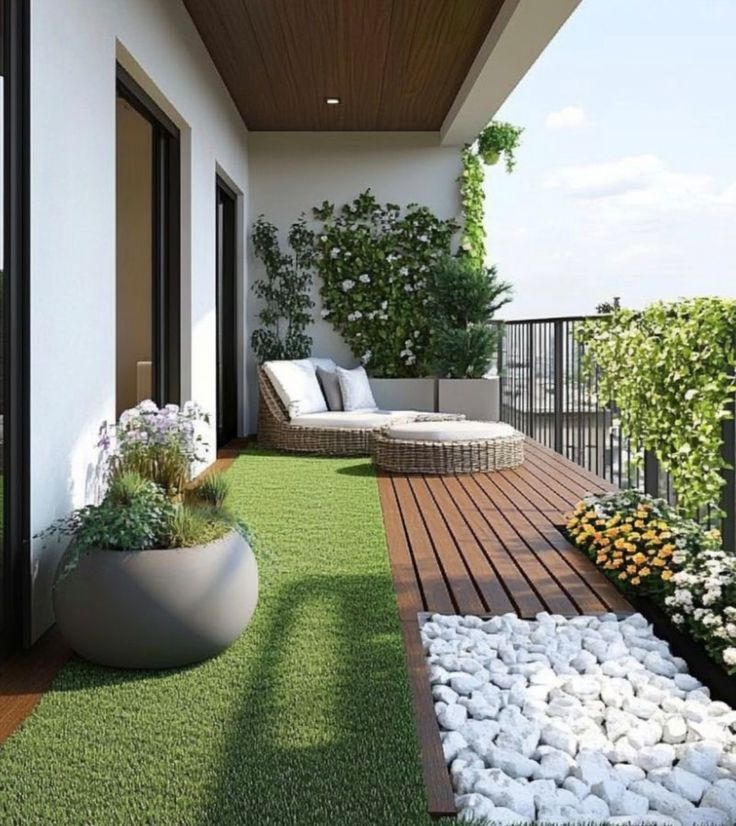
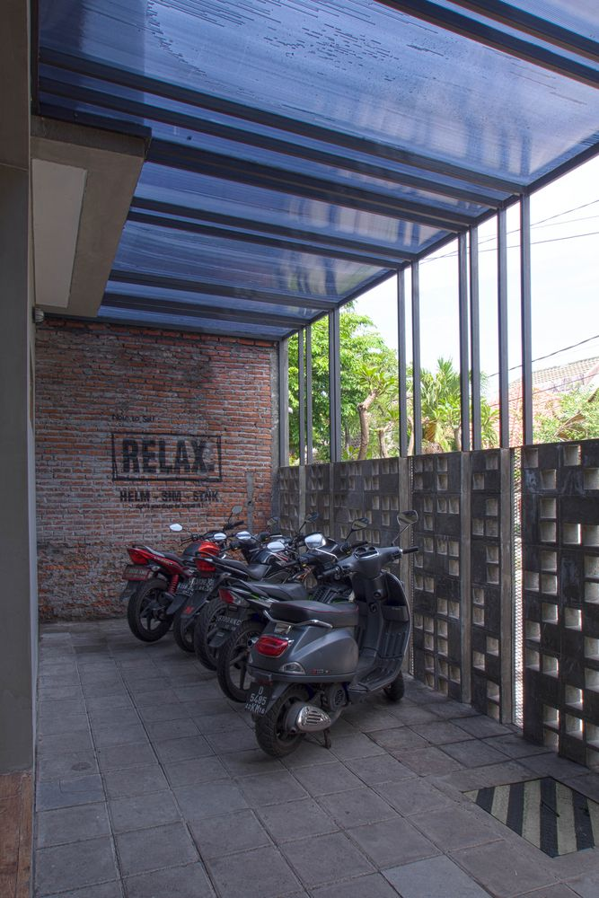
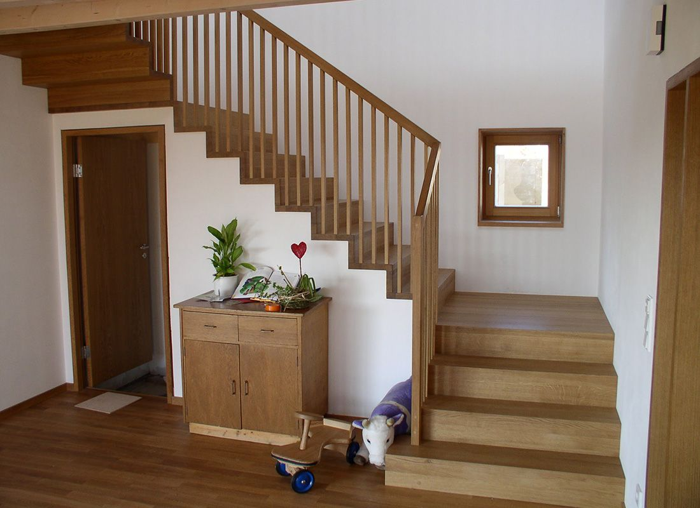
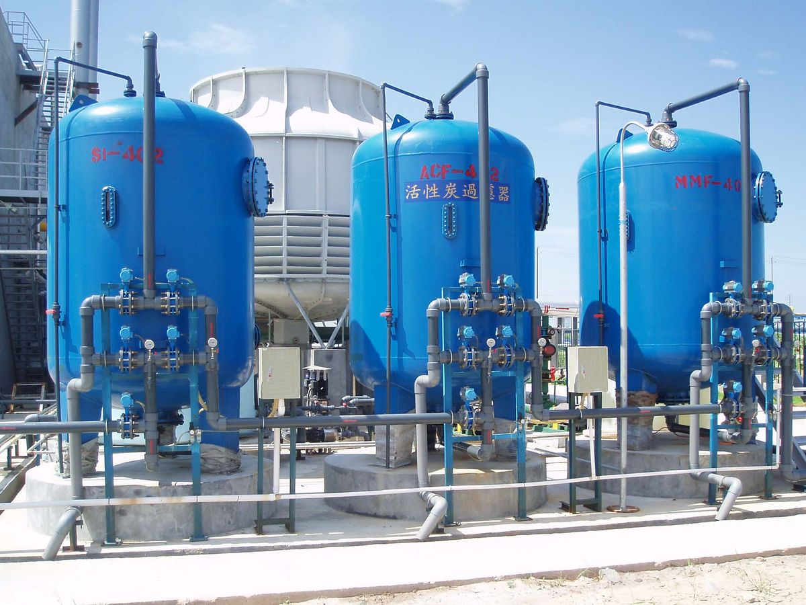

Pagar

Kos ini dilengkapi dengan pagar kokoh dan tertutup untuk menjaga keamanan serta privasi penghuni. Dengan akses yang teratur dan lingkungan yang terjaga, kamu bisa merasa lebih tenang dan nyaman saat beristirahat maupun meninggalkan kos.
Dapur

Kami menyediakan dapur yang bersih dan nyaman untuk digunakan oleh penghuni kos. Dilengkapi dengan peralatan dasar seperti kompor, wastafel, serta area penyimpanan, kamu bisa dengan mudah menyiapkan makanan sendiri setiap hari. Suasana dapur yang rapi dan terawat membuat kegiatan memasak terasa lebih menyenangkan.
Kamar Mandi

Kami menyediakan kamar mandi yang bersih, terawat, dan nyaman digunakan setiap hari. Dilengkapi dengan air mengalir lancar serta ventilasi yang baik, kamar mandi ini mendukung kenyamanan penghuni dalam beraktivitas. Kebersihan selalu dijaga agar kamu merasa segar dan betah setiap saat.
Kulkas

Kami menyediakan kulkas bersama yang bersih dan terawat untuk menyimpan makanan atau minuman penghuni kos. Dengan fasilitas ini, kamu bisa menjaga kesegaran bahan makanan dan menikmati minuman dingin kapan saja tanpa perlu repot membawa kulkas sendiri.
Balkon

Nikmati suasana santai di balkon kos yang sejuk dan nyaman. Area ini cocok untuk bersantai, menikmati udara segar, atau sekadar melepas penat setelah beraktivitas. Dengan pemandangan sekitar yang asri, balkon menjadi tempat favorit untuk menikmati waktu luang dengan tenang.
Parkiran

Kami menyediakan fasilitas parkiran yang luas, bersih, dan aman bagi penghuni kos. Area parkir berada di dalam lingkungan kos sehingga kendaraan lebih terlindungi dan mudah diakses kapan saja. Dengan penerangan yang baik dan suasana lingkungan yang tertata, kamu bisa merasa tenang meninggalkan kendaraan setiap hari.
Tangga

Fasilitas tangga di kos kami didesain dengan kokoh dan nyaman digunakan. Setiap pijakan bersih dan terawat, dilengkapi dengan penerangan yang cukup untuk memastikan keamanan dan kenyamanan penghuni saat naik turun kapan pun.
Air Bersih

Kami menyediakan fasilitas air bersih gratis tanpa biaya tambahan bagi seluruh penghuni kos. Air tersedia sepanjang hari dengan tekanan yang stabil, sehingga kamu bisa beraktivitas dengan nyaman tanpa perlu khawatir soal tagihan air setiap bulan.